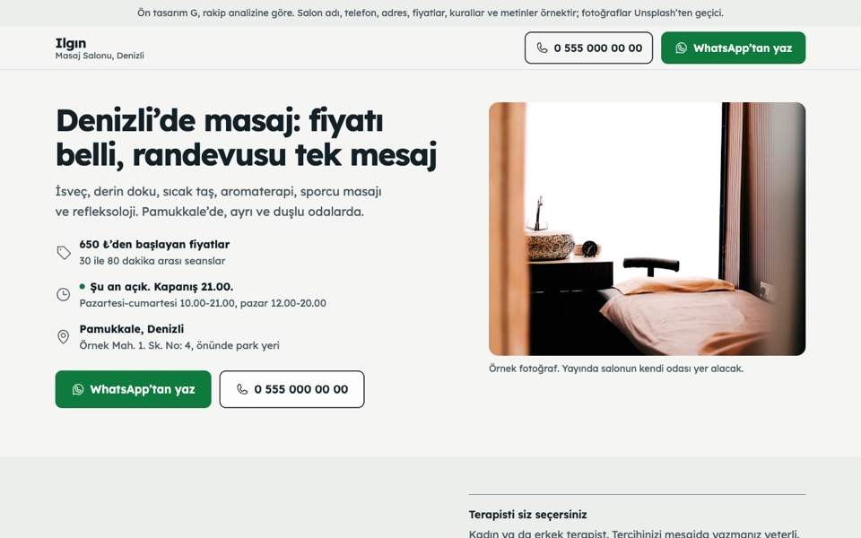
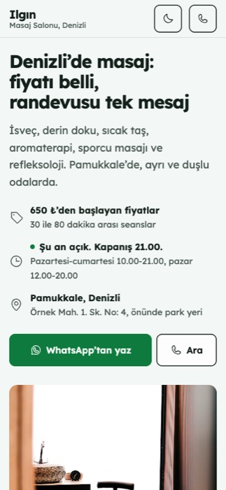

A · Taş
Fotoğrafla açılan sıcak bir sayfa; her masajın yanında kendi fotoğrafı var.
Kime uygun: Salonunun güzel fotoğrafları olan, sıcak bir ilk izlenim isteyenlere.
Demoyu görHepsi telefonda ve bilgisayarda çalışır; ziyaretçiyi WhatsApp’tan yazmaya ya da aramaya yönlendirir. Demoları açıp deneyin, beğendiğinizi seçin.


Önerimiz
Denizli’de ve Türkiye genelinde 22 masaj sitesini inceledik. Ziyaretçinin aklındaki soruları ilk ekranda yanıtlayan site çok az. Bu tasarım onları en başta yanıtlıyor.
Aynı bilgiler, farklı görünüm. Bir tasarımda beğendiğiniz parçayı başka bir tasarıma da taşıyabiliriz.
Fotoğrafla açılan sıcak bir sayfa; her masajın yanında kendi fotoğrafı var.
Kime uygun: Salonunun güzel fotoğrafları olan, sıcak bir ilk izlenim isteyenlere.
Demoyu görMum ışığında, koyu ve sakin bir sayfa; fiyatlar menü kartı gibi.
Kime uygun: Akşam geç saate kadar açık olmayı öne çıkarmak isteyenlere.
Demoyu görDenizli peştamalının çizgilerinden ilham; randevu formu ilk ekranda.
Kime uygun: Yerel kimliği ve hızlı randevuyu öne almak isteyenlere.
Demoyu görBüyük harfler ve güçlü kırmızı; alışılmışın dışında, dikkat çeken bir sayfa.
Kime uygun: Genç ve sporcu kitleye seslenen, farklı görünmek isteyenlere.
Demoyu görBol boşluklu, sade bir sayfa; randevu tek bir cümleyle yazılır.
Kime uygun: Az ve öz anlatımı seven, sakin bir marka isteyenlere.
Demoyu görHareketli bir sayfa: nefes halkası, kaydırdıkça üst üste gelen masaj kartları.
Kime uygun: Rahatlama deneyimini sayfada da hissettirmek isteyenlere.
Demoyu görBeğendiğiniz tasarımı ya da birkaç tasarımdan beğendiğiniz parçaları söyleyin.
Demolardaki ad, telefon, adres, fiyat ve fotoğraflar örnektir; hepsi sizinkilerle değişir.
Siteyi alan adınızda yayına alır, Google İşletme Profilinize bağlarız.